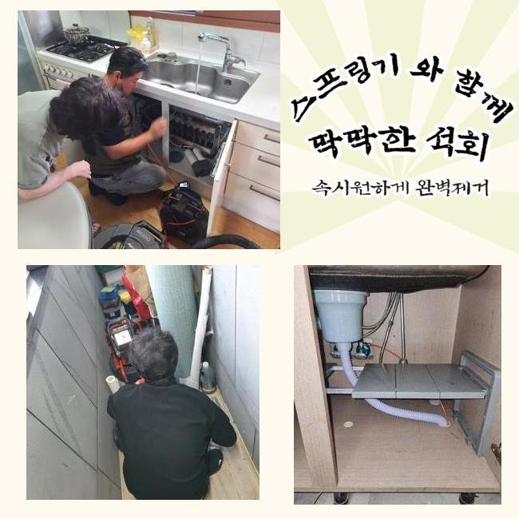
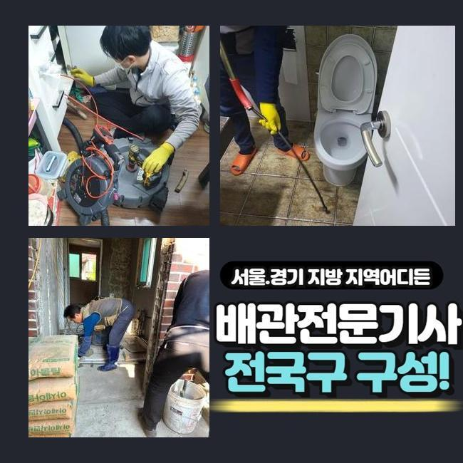
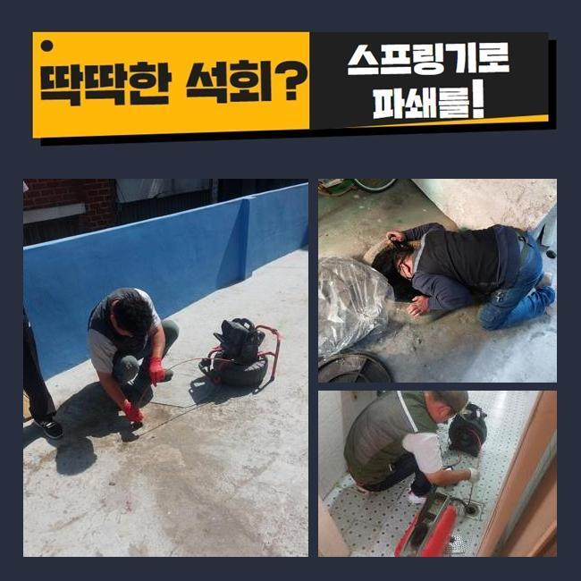
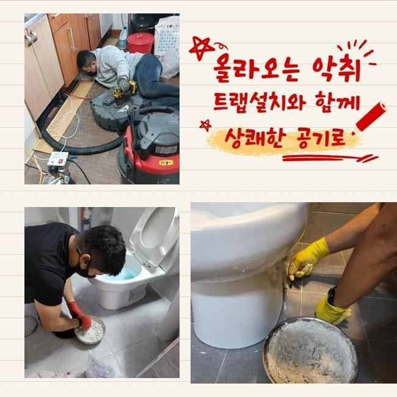
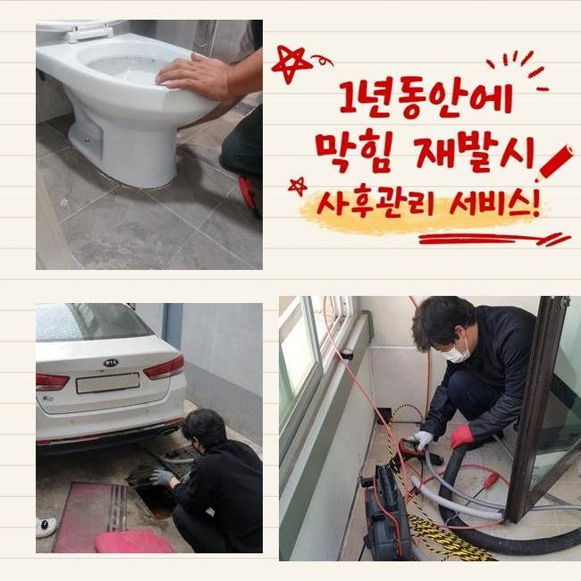
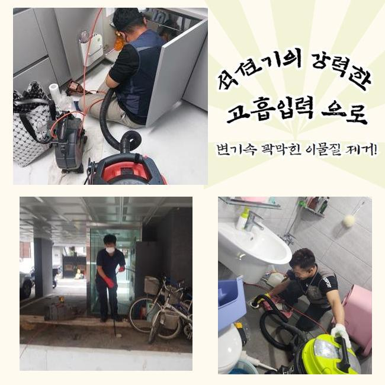
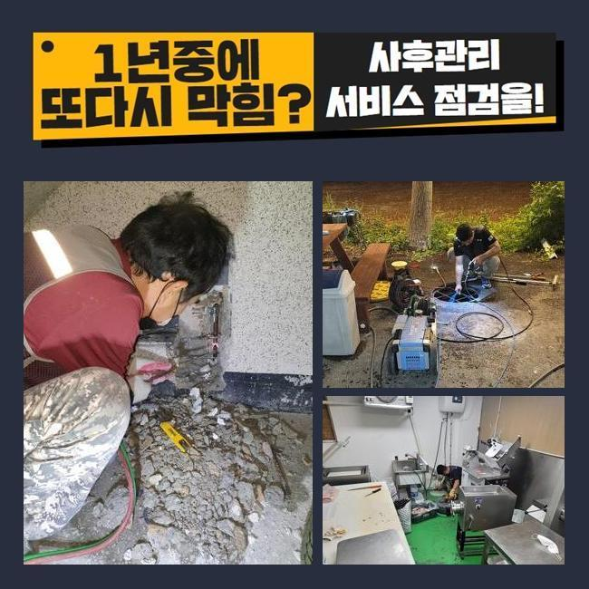

🏠 성북구 성북동싱크대뚫음 안암동 하수구청소장비 누수탐지
용인 싱크대막힘 전문 시공 후기

📋 작업 개요
- 위치: 용인
- 서비스 유형: 싱크대막힘, 하수구막힘, 배관막힘, 집수정막힘, 누수수리, 역류해결, 뚫는업체, 배관청소, 고압세척, 악취차단
- 작업 일시: 2025. 3. 25. 0:24
- 업체명: 하수구수사대 (010-5615-2118)
🔍 문제 상황
성북구 성북동싱크대뚫음 안암동 하수구청소장비 누수탐지
하수구시스템이 무너졌을때 간단한 문제로 끝난다면 문제없지만 방임할경우 2차문제들로 커질수가 있는데요
빠르게 대응하는것이 좋은 방법이지만 혹시나 방치하고 계신다면 업체를호출해 문제증상을 해결해보시길 바래요
이번장소는 상가시설인데 배수구막힘이 일어나서 의뢰를 주셨는데요
배관이 막혀버리면 급한상태가 대부분이므로 신속하게 방문드립니다
상가시설안 식당쪽에서 배관시스템이 망가졌다고 하셨어요
하루뒤에 영업이 이루어져야 하므로 신속히 해결해야했죠
막힌원인에 대하여 파악해내려고 서둘렀어요
먼저 식당입구와 내부도 살펴봤더니 트렌치배수구와 메인배관도 문제가있었죠
고객님께 상황과 관련하여 알려드리고나서 수리에 착수하기로 했는데요
작업진행전 반드시 고객님께 작업과정을 안내하고있죠

🔎 원인 분석
💡 전문가 진단: 정밀 진단 장비를 사용하여 슬러지의 고착 여부를 판명하고 타격/세척 작업을 실시했습니다.
플렉스샤프트기로 안속에있는 이물질들을 분쇄해주었죠
식당이다보니 기름기가 상당히 쌓여있는 상태였어요
강도를 조절하며 안쪽에 쌓이게된 찌꺼기들을 제거했습니다
중간중간에 기름기들이 제거작업이 깔끔하게 이뤄지는지 내시경장비로 파악하면서 진행해주었어요
물이넘치던 하수구였으므로 가능한 서둘러서 크랙이 발생하지않게 하수구청소를 진행했는데 또 다른 피해가없이 역류현상을 바로잡아서 안심했죠
바깥쪽을 작업해준뒤 건물내부로 장소를 옮겼어요
식당내부에 있는 싱크대배관이 막히게되어 내시경기기로 먼저 원인파악을 진행해주었네요
검사를해보니 기름기들이 석회화되어 막힘문제가 일어난걸로 판단되었죠
고착물질을 제거하고자 분쇄기계로 잘게 부숴 주었습니다
이다음엔 남겨진 이물을 석션기를 통해 흡입시키는 과정으로 착수했어요
이러한 문제가 발생되는것은 여러의 이유들로 발생되지만 가장 큰 이유로는 잔해물질들 때문이라고 할수있어요

🔧 작업 과정
그렇기때문에 음식물이나 기름기가 들어가지않게 신경써야하고 정기적인 하수구를 점검해 문제는 없는지 체크해주시는 게 좋겠습니다
반복적인 스케일링을 통하여 트렌치내에 잔존되었던 기름이물과 메인관도 처리할수있었죠
집수정쪽도 마찬가지로 막혀있는걸 알아냈죠 집수정특성상 단순한 기계로는 해결하기가 어려우므로 고압세척기가 필요한 상황이었죠
작업에 들어가기전에 고객분꼐 양해를구한뒤 고압세척기의 필요성부분을 상세히 안내드렸죠
고압세척은 강한압의 물이 이용되므로 수리기사의 조심성이 필요하답니다
잘못건드릴시 하수구벽면에 균열이생겨 누수문제로 이어지게될수 있습니다
집수정안에 기름기가 가득하여 높은 압력의 물을쏴서 많은 이물질들을 밀어내주면서 제거했는데요
안쪽과 바깥쪽을 전체로 작업했더니 정상적인 배수상황으로 복구된걸 확인했어요
상시로 운영되는 영업장소는 금전적인 피해를 입으시기 때문에 항시 조속하게 방문이 가능합니다
씽크대배수구망 이라든지 악취차단 트랩을깔아 막힘문제나 악취현상까지 예방이 가능해요
제일 알맞은 해결방안은 막힘증세가 보일때 발견하자마자 전문인을 호출해 처리하시는 거에요
앞전에 말씀드렸지만 방치를 하신다면 누수문제나 역류되는 현상들로 이어진답니다
막힌하수구를 뚫어보려고 혼자서 직접 뚫는 시도를 해보셨을건데 가벼운 방법으로 처리하는 방법에대해 알려드리겠습니다
온수의물이나 하수도클리너를 적절하게 배수관에 흘려보내시고 해결이되지 못한다면 전문업체를 통해 수리를 받아보셔야 한답니다
과하게 시도한다면 배관크랙이 발생될수있으니 일정한 양으로만 시도하시는게 좋아요
어느장소라도 하수도가 막히게되면 불편한건 마찬가지 입니다
저흰 하수구가 존재하는 어떤곳이라도 출동해 드리고 있답니다


✅ 작업 완료
배관수리에 들어갈때 투명하게 작업과정을 진행해야지만 믿을수가 있으실거에요
작업견적에 대해 먼저 파악하여 비용과 관련하여 자세히 일러드려요
싱크대나 화장실 하수구는 석션장비로만 처리가된다면 5만원정도로 책정되니 참고바랍니다
하수구와 관련해 해소되지 않으신게 있으시면 시간상관없이 전화주신다면 상세한 상담으로 도와드릴테니 걱정마세요!
막히는문제 방치마시고 조속한 대처로 피해받지 않으셨으면 좋겠어요!




⚠️ 베란다 누수 및 방수 관리 방법
- ✅ 비가 많이 올 때 창틀 주변이나 아래층 천장에 얼룩이 생기는지 정기적으로 확인해 보세요.
- ✅ 우수관 주변 실리콘 마감이 들뜨거나 깨진 틈새가 있는지 손상 여부를 수시로 체크하세요.
- ✅ 베란다 바닥 타일의 줄눈(메지)이 소실되면 그 틈으로 물이 침투하여 누수가 유발됩니다.
- ✅ 누수 의심 증상 발견 시 방치하면 아래층 손실이 커지므로 즉시 전문가의 진단을 받으십시오.
💡 핵심 정리
- 확실한 장비 작업(내시경 점검 및 샤프트 스케일링)으로 원인을 뿌리 뽑습니다.
- 작업 후 1년 이내에 동일한 부위 재발 시 100% 무상 A/S 서비스를 보장합니다.
- 서울 · 경기 · 인천 전 지역에 24시간 언제든 긴급 출동할 수 있도록 항시 대기 중입니다.
❓ 자주 묻는 질문 (FAQ)
🚨 용인 싱크대막힘 문제로 고민이신가요?
정확한 원인 진단과 확실한 시공으로 재발 없는 해결을 약속드립니다.
24시간 긴급 출동 | 서울 · 경기 · 인천 전지역 | 1년 내 재발 시 무상 A/S